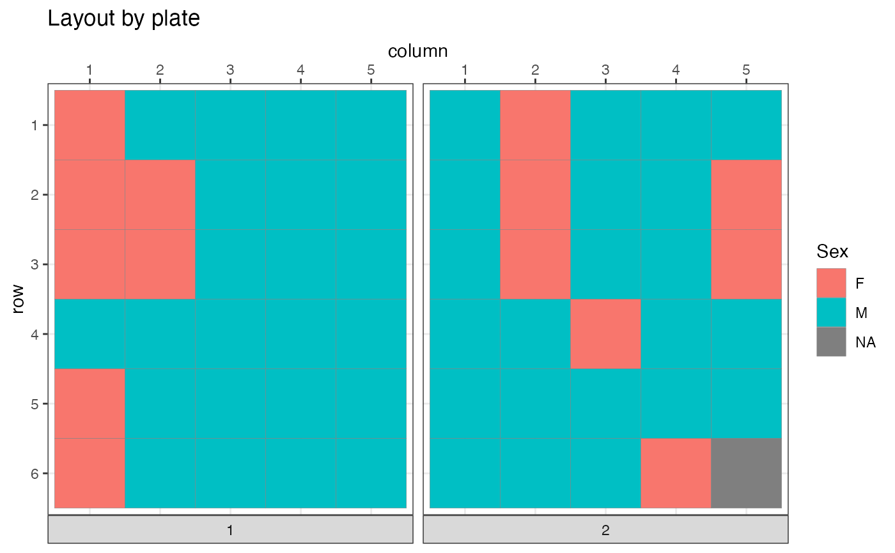

R/optimize.R
optimize_design.RdGeneric optimizer that can be customized by user provided functions for generating shuffles and progressing towards the minimal score
optimize_design(
batch_container,
samples = NULL,
scoring = NULL,
n_shuffle = NULL,
shuffle_proposal_func = NULL,
acceptance_func = accept_strict_improvement,
aggregate_scores_func = identity,
check_score_variance = TRUE,
autoscale_scores = FALSE,
autoscaling_permutations = 100,
autoscale_useboxcox = TRUE,
sample_attributes_fixed = FALSE,
max_iter = 10000,
min_delta = NA,
quiet = FALSE
)An instance of BatchContainer.
A data.frame with sample information.
Should be NULL if the BatchContainer already has samples in it.
Scoring function or a named list() of scoring functions.
Vector of length 1 or larger, defining how many random sample
swaps should be performed in each iteration. If length(n_shuffle)==1,
this sets no limit to the number of iterations. Otherwise, the optimization
stops if the swapping protocol is exhausted.
A user defined function to propose the next shuffling of samples.
Takes priority over n_shuffle if both are provided. The function is called with
a BatchContainer bc and an integer parameter iteration for the current iteration number,
allowing very flexible shuffling strategies.
Mapper syntax is supported (see purrr::as_mapper()).
The returned function must either return a list with fields srcand dst (for pairwise sample swapping)
or a numeric vector with a complete re-assigned sample order.
Alternative function to select a new score as the best one.
Defaults to strict improvement rule, i.e. all elements of a score have to be smaller or equal in order to accept the solution as better.
This may be replaced with an alternative acceptance function included in the package
(e.g. mk_simanneal_acceptance_func()) or a user provided function.
Mapper syntax is supported (see purrr::as_mapper()).
A function to aggregate multiple scores AFTER (potential) auto-scaling and BEFORE acceptance evaluation.
If a function is passed, (multi-dimensional) scores will be transformed (often to a single double value) before calling the acceptance function.
E.g., see first_score_only() or worst_score().
Note that particular acceptance functions may require aggregation of a score to a single scalar in order to work, see for example those
generated by mk_simanneal_acceptance_func().
Mapper syntax is supported (see purrr::as_mapper()).
Logical: if TRUE, scores will be checked for variability under sample permutation and the optimization is not performed if at least one subscore appears to have a zero variance.
Logical: if TRUE, perform a transformation on the fly to equally scale scores to a standard normal. This makes scores more directly comparable and easier to aggregate.
How many random sample permutations should be done to estimate autoscaling parameters. (Note: minimum will be 20, regardless of the specified value)
Logical; if TRUE, use a boxcox transformation for the autoscaling if possible at all.
Requires installation of the bestNormalize package.
Logical; if TRUE, sample shuffle function may generate altered sample attributes at each iteration. This affects estimation of score distributions. (Parameter only relevant if shuffle function does introduce attributes!)
Stop optimization after a maximum number of iterations, independent from other stopping criteria (user defined shuffle proposal or min_delta).
If not NA, optimization is stopped as soon as successive improvement (i.e. euclidean distance between score vectors from current best and previously best solution) drops below min_delta.
If TRUE, suppress non-critical warnings or messages.
A trace object
data("invivo_study_samples")
bc <- BatchContainer$new(
dimensions = c("plate" = 2, "column" = 5, "row" = 6)
)
bc <- optimize_design(bc, invivo_study_samples,
scoring = osat_score_generator("plate", "Sex"),
max_iter = 100
)
#> Warning: NAs in features / batch columns; they will be excluded from scoring
#> Checking variances of 1-dim. score vector.
#> ... (141.154) - OK
#> Initial score: 182.5
#> Achieved score: 132.5 at iteration 1
#> Achieved score: 90.5 at iteration 2
#> Achieved score: 56.5 at iteration 6
#> Achieved score: 30.5 at iteration 11
#> Achieved score: 12.5 at iteration 15
#> Achieved score: 2.5 at iteration 16
#> Achieved score: 0.5 at iteration 31
plot_plate(bc$get_samples(), .col = Sex)
